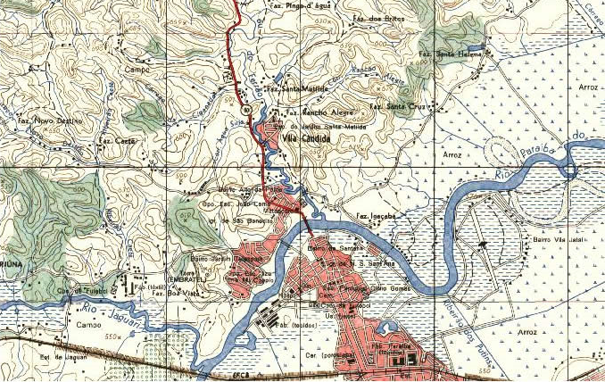

Intro
No Brasil, a simbologia padronizada para a representação cartográfica de feições em pequenas escalas (escalas-padrão de 1:1.000.000, 1:500.000, 1:250.000, 1:100.000, 1:50.000 e 1:25.000) é definida pelo Manual Técnico T34-700 – Convenções Cartográficas, para cartas topográficas de referência com a característica de serem contínuas, homogêneas e articuladas. O presente trabalho visa apresentar as etapas de desenvolvimento das soluções encontradas para automatizar o processo de aplicação da simbologia proposta pelo Manual Técnico T34-700 para feições representadas em cartas topográficas de pequenas escalas, no contexto brasileiro, bem como, para realizar o armazenamento e compartilhamento dos símbolos. A automatização do processo foi possível através do desenvolvimento de um plugin no ambiente do software de geoprocessamento de código aberto QGIS, por meio da linguagem de programação Python, enquanto que o armazenamento e o compartilhamento dos símbolos foi realizado através do sistema de controle Github, o qual possui versão e distribuição livre e código aberto.
Arquitetura do Sistema
A arquitetura desenvolvida para a aplicação apresenta o funcionamento do sistema, de modo a compreender que os arquivos em formato shapefile armazenados no banco de dados são carregados através da interação entre o QGIS e o plugin desenvolvido.
As simbologias pré-definidas são utilizadas pelo plugin de forma a serem aplicadas nas camadas selecionadas, e as mesmas passam a ser representadas com a simbologia desejada. As simbologias pré-definidas são armazenadas no github, sendo que o usuário pode fazer o download dos arquivos no computador e alocando-os em uma pasta, essa por sua vez pode ser referenciada pelo plugin e aplicada às camadas do banco de dados ou em outros projetos no software QGIS.